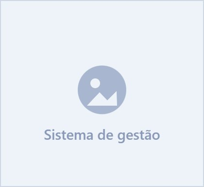
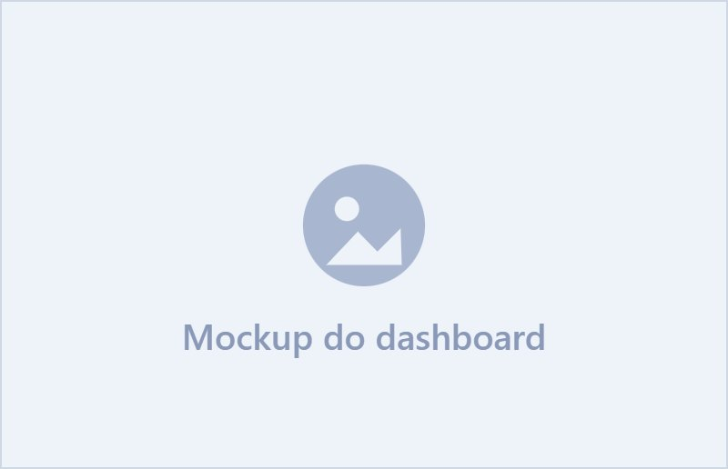
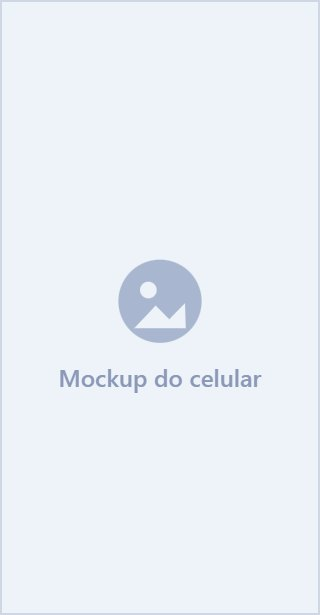
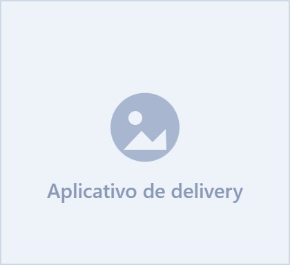

Sistema de Gestão
Plataforma completa para gestão empresarial com relatórios e indicadores.
Ver projeto
Suporte técnico de TI e desenvolvimento de sites, sistemas e aplicativos sob medida.
Atendimento em N1, N2 e N3, manutenção preventiva e corretiva dos equipamentos e acompanhamento da infraestrutura — com chamado registrado do primeiro contato até a solução.
Assistência de informática para quem precisa do computador funcionando hoje: formatação, instalação de programas, Wi-Fi e recuperação de arquivos.
Criamos sites, sistemas e aplicativos personalizados para otimizar processos e gerar resultados.


Todo cliente Fonsetech recebe acesso ao FonseDesk, o sistema de chamados que desenvolvemos, onde a empresa abre a solicitação, acompanha o andamento e consulta o histórico do que já foi resolvido — com o técnico responsável e a data de cada atendimento registrados.
No mesmo ambiente ficam as visitas técnicas agendadas, o inventário das máquinas, os materiais de treinamento da equipe e os programas liberados para download. Nada se perde em conversa de mensagem e ninguém precisa repetir o problema duas vezes.
Abertura com prioridade, categoria e equipamento — a fila fica visível para os dois lados.
Cada mudança de status fica registrada, com o histórico completo dos atendimentos anteriores.
Apostilas e materiais de capacitação liberados por empresa, mais os programas para download.
20 GB de armazenamento para os arquivos que a empresa não pode perder, no plano contratado.
Contratos mensais sem fidelidade, com equipe dedicada e SLA definido para cada operação.
A Fonsetech nasceu para resolver um problema muito comum: empresas e pessoas que dependem de tecnologia no dia a dia, mas não têm um parceiro técnico de confiança para cuidar dela. Comecei atendendo helpdesk empresarial e suporte particular — e continuo fazendo isso todos os dias.
Com o tempo, o próximo passo natural foi criar, não só manter. Hoje a Fonsetech também desenvolve sites, sistemas web e aplicativos sob medida, unindo quem resolve o chamado com quem constrói o software.
Essa combinação muda o resultado: quem passa o dia resolvendo chamado sabe exatamente onde um sistema trava, onde o processo emperra e o que faz um usuário perder tempo.
Suporte técnico, Helpdesk, manutenção e atendimento.
Sites, sistemas, aplicativos, integrações e automações.
Plataforma completa para gestão empresarial com relatórios e indicadores.
Ver projeto
Aplicativo mobile para pedidos online com painel administrativo integrado.
Ver projeto
Conte o que está travando na sua operação e devolvemos um diagnóstico com prazo e custo, sem compromisso.
"A Fonsetech TI transformou nossa operação. O suporte é rápido, eficiente e sempre resolve. Super recomendo!"